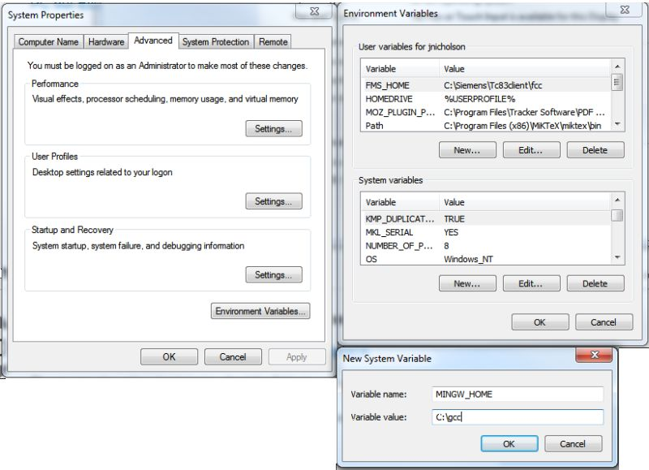

Documentation
Table of Contents here
Preface
A knowledge of MATLAB is necessary. A knowledge of simple
compilation of C, C++, or Fortran is helpful. Also, if you have
worked with Cygwin, MinGW, MinGW-w32, or MinGW-w64 that is helpful.
The main attractions for using GCC for Windows over other compilers is the following:
- GCC is free as no money and free as in speech.
- Gfortran is the only Fortran compiler on windows that is
free. The only other option with MATLAB seems to be the Intel
Fortran compiler.
- Compiling with GCC may allow the same source file to be used on both Unix and Windows operating systems.
To make matters more complicated, MinGW-w64 is a different project than MinGW. The MinGW-w64 project has support for both 32 bit and 64 compiling on Windows but MinGW only supports 32 bit. MinGW-w64 forked the MinGW and added 64 bit support. You can use either with Gnumex.
As an added complication, you can also do Mingw compiles using the Cygwin tools, i.e. use the Cygwin tools to link to the Microsoft libraries. This is achieved by passing a flag to the Cygwin gcc, -mno-cygwin. This is refered to as Cygwin/mingw compiling. There are some problems with this option. Although the gnumex utilities here do support Cygwin-mingw compiles, I would strongly suggest using Mingw instead. There have been rumblings on the Cygwin mailing list about discontinuation for -mno-cygwin support, but it is still being updated.
Note that Cygwin does not play well with MATLAB. If you use Cygwin without -mno-cygwin flag, only GCC 3.2 or below is supported. The -mno-cygwin flag is deprecated. MinGW or MinGW-w64 is recommended.
Introduction
content
Installation and Setup
Configuring Gnumex requires either Cygwin or MinGW to be installed 1st. Note the recommend compilers are MinGW or MinGW-w64 (both 32 or 64 bit). Cygwin
Installing MinGW or MinGW-w64
There are muliple flavors of MinGW and MinGW-w64. Two different links to different MinGW-w64 projects are in the Links
section as examples that contributors have used. If you plan to
work with 32 bit MATLAB, get the 32 bit compiler. For 64 bit
MATLAB, get a 64 bit compiler. Note that TDM-GCC installs both
the 64-bit and 32-bit in the same directory; do not attempt this
with other versions of MinGW-w64.
As an example, here is instructions for the compiler from equations.com:
- Download gcc-4.7.3-64.exe from here.
- Run
gcc-4.7.3-64.exe and follow the instructions. Install to the
default location of C:\gcc . Please note that the installer modifies
the PATH environmental variable (if you don't know what this is, google
"windows environmental variable").
- Optionally, create the environmental variable "MINGW_HOME" pointed to the install directory C:\gcc . You do this by going to Control Panel-->System-->Advanced System Settings-->Environmental Variables as shown below.
Installing Cygwin or Cygwin64
- The version that you want is available via the Ptolemy cywgin
page. Get the CygwinDevel.exe version from there, and install as
described in that page.
Usage
content